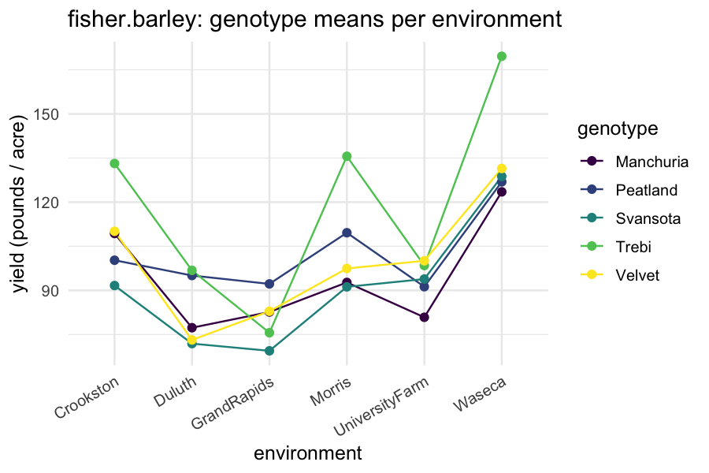
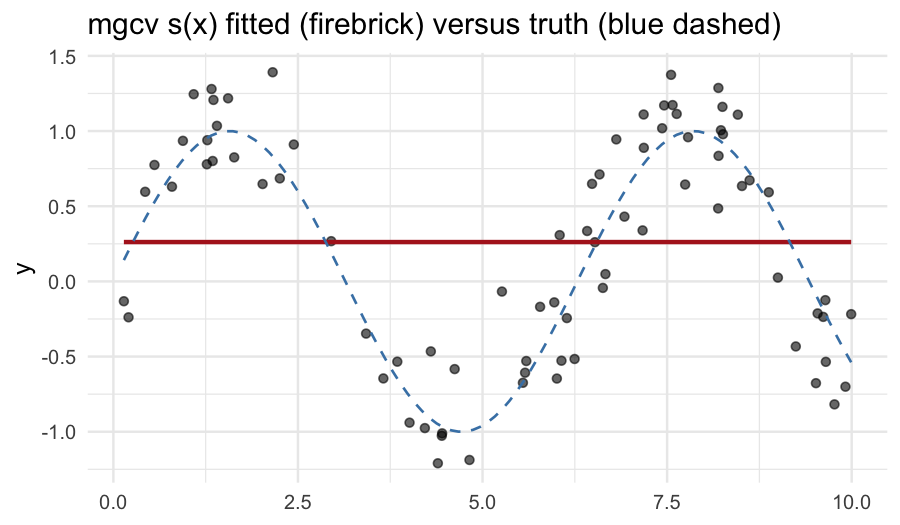
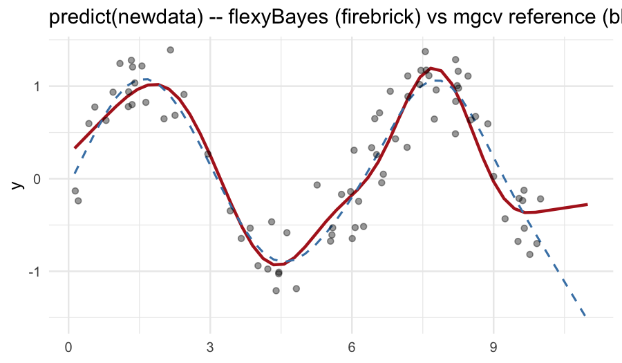

Tutorial 03: Foundational regression: linear models, random effects, and mgcv smooths
2026-06-06
Source:vignettes/flexyBayes-03-regression.Rmd
flexyBayes-03-regression.Rmd1. Why start with regression?
Linear regression is the simplest case flexyBayes
handles, and every richer model in the package is a regression model
with extra structure. Starting here makes three things explicit before
the hierarchical, structured-covariance, and spatio-temporal vignettes
build on them.
- The fixed-effect layer of every subsequent model is a regression model on its own.
- Adding a random effect (one variance component on top of
the regression) takes us into the mixed-model regime — illustrated in §5
below with
sleepstudy. - Smooth terms (
s()frommgcv) sit naturally inside the mixed-model framework; §6 shows the simplest case.
Throughout this tutorial we use the asreml-style API:
-
fixed— the response and the (fixed) regression formula. -
random— random effects (~ subject,~ s(time),~ block). -
rcov— residual covariance (default~ units, i.e. iid).
fb_brms() is the Stan (brms) engine pin; with a
brms-shaped formula it covers the random-intercept subset of the
term-type surface, and is introduced in the getting started and
hierarchical models vignettes.
2. One-way analysis of variance: PlantGrowth
datasets::PlantGrowth records the dried weight of plants
under three treatment conditions: control, treatment 1, treatment 2. The
natural model is a one-way ANOVA — fixed effect for the three-level
factor.
library(flexyBayes)
data(PlantGrowth)
str(PlantGrowth)
#> 'data.frame': 30 obs. of 2 variables:
#> $ weight: num 4.17 5.58 5.18 6.11 4.5 4.61 5.17 4.53 5.33 5.14 ...
#> $ group : Factor w/ 3 levels "ctrl","trt1",..: 1 1 1 1 1 1 1 1 1 1 ...
fit_g <- flexybayes(
fixed = weight ~ group, data = PlantGrowth,
n_samples = 2000, warmup = 3000, chains = 4, verbose = FALSE
)
summary(fit_g)
#> Bayesian mixed model summary [flexyBayes / aggregated-gaussian]
#> =================================================================
#> family: gaussian / identity
#> N = 30 , K = 3
#> backend: inla
#> exactness: aggregated_exact
#> priors: custom (explicit prior supplied; see prior_summary())
#> aggregation: N = 30 rows -> K = 3 cells (ratio 10:1)
#>
#> -- Fixed effects (posterior) -----------------------------------
#> Estimate Post.SD
#> (Intercept) 5.032 0.1959
#> grouptrt1 -0.371 0.2770
#> grouptrt2 0.494 0.2770
#>
#> -- Variance components ----------------------------------------
#> sigma (residual SD): 0.6016
#>
#> Run time: 2.1 secThe fixed-effect block reports the baseline (control) mean as the
intercept, and the deviations of trt1 and trt2
from baseline. The residual standard deviation block reports the
within-group spread.
A reference fit with lm():
summary(lm(weight ~ group, data = PlantGrowth))
#>
#> Call:
#> lm(formula = weight ~ group, data = PlantGrowth)
#>
#> Residuals:
#> Min 1Q Median 3Q Max
#> -1.0710 -0.4180 -0.0060 0.2627 1.3690
#>
#> Coefficients:
#> Estimate Std. Error t value Pr(>|t|)
#> (Intercept) 5.0320 0.1971 25.527 <2e-16 ***
#> grouptrt1 -0.3710 0.2788 -1.331 0.1944
#> grouptrt2 0.4940 0.2788 1.772 0.0877 .
#> ---
#> Signif. codes: 0 '***' 0.001 '**' 0.01 '*' 0.05 '.' 0.1 ' ' 1
#>
#> Residual standard error: 0.6234 on 27 degrees of freedom
#> Multiple R-squared: 0.2641, Adjusted R-squared: 0.2096
#> F-statistic: 4.846 on 2 and 27 DF, p-value: 0.01591The frequentist least-squares estimates and the Bayesian posterior means agree to about the second decimal — exactly as expected for a linear model with weakly informative priors and a moderate sample size.
3. Multiple regression with two factors:
fisher.barley
agridat::fisher.barley (Fisher, 1935) is a small
classic: barley yield in pounds per acre for five varieties grown at six
locations across two years. We model yield as additive in genotype and
environment.
data(fisher.barley, package = "agridat")
str(fisher.barley)
#> 'data.frame': 60 obs. of 4 variables:
#> $ yield: num 81 80.7 146.6 100.4 82.3 ...
#> $ gen : Factor w/ 5 levels "Manchuria","Peatland",..: 1 1 1 1 1 1 1 1 1 1 ...
#> $ env : Factor w/ 6 levels "Crookston","Duluth",..: 5 5 6 6 4 4 1 1 3 3 ...
#> $ year : int 1931 1932 1931 1932 1931 1932 1931 1932 1931 1932 ...
fit_barley <- flexybayes(
fixed = yield ~ gen + env, data = fisher.barley,
n_samples = 2000, warmup = 3000, chains = 4, verbose = FALSE
)
summary(fit_barley)
#> Bayesian mixed model summary [flexyBayes / aggregated-gaussian]
#> =================================================================
#> family: gaussian / identity
#> N = 60 , K = 30
#> backend: inla
#> exactness: aggregated_exact
#> priors: custom (explicit prior supplied; see prior_summary())
#> aggregation: N = 60 rows -> K = 30 cells (ratio 2:1)
#>
#> -- Fixed effects (posterior) -----------------------------------
#> Estimate Post.SD
#> (Intercept) 101.6930 7.1560
#> genPeatland 7.0714 7.3624
#> genSvansota -4.0057 7.3611
#> genTrebi 22.2751 7.3652
#> genVelvet 3.8105 7.3620
#> envDuluth -23.8300 7.9437
#> envGrandRapids -26.0311 7.9445
#> envMorris -2.1382 7.9379
#> envUniversityFarm -14.1281 7.9408
#> envWaseca 27.5277 7.9345
#>
#> -- Variance components ----------------------------------------
#> sigma (residual SD): 18.6458
#>
#> Run time: 2.04 secThe two factor blocks are reported relative to the (alphabetically
first) baseline level of each. To get marginal means per
genotype and per environment, use emmeans — see Tutorial 08
(downstream analysis).
A standard exploratory plot of the cell means:
library(ggplot2)
ggplot(fisher.barley,
aes(x = env, y = yield, group = gen, colour = gen)) +
geom_line(stat = "summary", fun = mean) +
geom_point(stat = "summary", fun = mean, size = 2) +
scale_colour_viridis_d() +
theme_minimal(base_size = 12) +
theme(axis.text.x = element_text(angle = 30, hjust = 1)) +
labs(x = "environment", y = "yield (pounds / acre)",
colour = "genotype",
title = "fisher.barley: genotype means per environment")
4. Continuous predictors: pooled sleepstudy
lme4::sleepstudy records reaction time under sleep
restriction across 18 subjects and 10 days. Ignoring the subject
grouping for now — a pooled regression of reaction on days:
data(sleepstudy, package = "lme4")
fit_pool <- flexybayes(
fixed = Reaction ~ Days, data = sleepstudy,
n_samples = 2000, warmup = 3000, chains = 4, verbose = FALSE
)
summary(fit_pool)
#> Bayesian fit summary [flexybayes_inla / INLA backend]
#> ------------------------------------------------------------
#> Fixed effects:
#> mean sd 0.025quant 0.5quant 0.975quant mode kld
#> (Intercept) 251.4781 6.6485 238.4270 251.4777 264.5316 251.4777 0
#> Days 10.4511 1.2451 8.0064 10.4511 12.8952 10.4511 0
#>
#> Hyperparameters:
#> mean sd 0.025quant 0.5quant 0.975quant
#> Precision for the Gaussian observations 4e-04 0 4e-04 4e-04 5e-04
#> mode
#> Precision for the Gaussian observations 4e-04
#>
#> Random effects:
#> (none)
#> ------------------------------------------------------------The slope on Days is the average per-day increase in
reaction time. The residual standard deviation absorbs both
within-subject and between-subject variation, which is wasteful —
different subjects have different baseline reaction times, and a pooled
regression spends one big residual on what is structurally two separate
sources of variation.
5. Adding a random intercept on Subject
The minimal upgrade from §4: keep the same fixed slope on
Days but let each subject have its own baseline reaction
time. In ASReml syntax, this is one extra random term:
fit_re <- flexybayes(
fixed = Reaction ~ Days, data = sleepstudy,
random = ~ Subject,
n_samples = 2000, warmup = 3000, chains = 4, verbose = FALSE
)
summary(fit_re)
#> Bayesian fit summary [flexybayes_inla / INLA backend]
#> ------------------------------------------------------------
#> Fixed effects:
#> mean sd 0.025quant 0.5quant 0.975quant mode kld
#> (Intercept) 251.4772 6.605 238.5137 251.4768 264.4426 251.4768 0
#> Days 10.4513 1.237 8.0231 10.4513 12.8790 10.4513 0
#>
#> Hyperparameters:
#> mean sd 0.025quant
#> Precision for the Gaussian observations 4.00000e-04 0.000000e+00 3.000000e-04
#> Precision for Subject 8.51441e+52 2.233032e+52 5.572774e+52
#> 0.5quant 0.975quant mode
#> Precision for the Gaussian observations 4.000000e-04 5.000000e-04 4.000000e-04
#> Precision for Subject 8.071926e+52 1.415361e+53 6.995155e+52
#>
#> Random effects:
#> groups: Subject
#> ------------------------------------------------------------Two things change relative to the pooled fit in §4.
- A second variance component appears: the standard deviation of the
Subject-level random intercepts. Under the default this is given a bounded uniform prior —sd(Subject) ~ uniform(0, 5*sd(y))— a weakly-informative choice for this moderate group count (for very smallJ, Gelman (2006) recommends a half-Cauchy instead). - The residual standard deviation drops, because between-subject variance is no longer absorbed into it.
The Reaction ~ Days + (1 | Subject) formulation in
lme4 / brms is a notational shortcut for
exactly this model. Tutorial 04 (hierarchical models) extends this by
adding random slopes on Days per subject;
structurally that is just one more random term.
This is the smallest mixed-model regression, and the structural template every subsequent vignette builds on.
6. Smooth terms via mgcv::s()
A penalised spline lets us add a smooth, non-linear effect of a
continuous predictor without committing to a specific functional form.
In mgcv the smooth specifier is s(...);
flexyBayes ingests it directly via
mgcv::smoothCon(). Under the hood the basis is a random
effect with a smoothness-penalising covariance, so s(x)
lives in the random argument.
We illustrate with a synthetic sinusoid plus noise — a clean test of how well a flexible smoother recovers the underlying signal.
n <- 80
x <- sort(runif(n, 0, 10))
y <- sin(x) + rnorm(n, 0, 0.3)
sim_dat <- data.frame(y = y, x = x)
fit_smooth <- flexybayes(
fixed = y ~ 1,
random = ~ s(x),
data = sim_dat,
n_samples = 2000, warmup = 3000, chains = 4, verbose = FALSE
)
summary(fit_smooth)
#> Bayesian mixed model summary [flexyBayes]
#> ============================================================
#> Fixed : y ~ 1
#> Random : ~s(x)
#> Family : gaussian / identity
#> N = 80 , chains = 4 , samples = 2000
#> Representation: exact
#> Engine: greta MCMC
#>
#> -- Fixed effects (posterior) ---------------------------------
#> Estimate Post.SD 2.5% 97.5%
#> (Intercept) 0.2617 0.0345 0.1921 0.328
#>
#> -- Variance components --------------------------------------
#> Component Estimate SD 2.5% 97.5%
#> 1 sigma_s_x 1.4479 0.3034 0.8990 1.9838
#> 2 sigma_e_atg 0.3144 0.0271 0.2686 0.3737
#>
#> -- Convergence ---------------------------------------------
#> Rhat range: 1.007 - 1.059
#> ESS range: 183 - 937
#> Run time : 21.8 secThe fixed block has only an intercept; the random block names the mgcv smooth. The residual sigma block reports the noise standard deviation; in our simulation we set it to 0.3 and the posterior should bracket this value.
A fitted-curve overlay:
sim_dat$fitted <- as.numeric(fitted(fit_smooth))
sim_dat <- sim_dat[order(sim_dat$x), ]
ggplot(sim_dat, aes(x = x, y = y)) +
geom_point(alpha = 0.6) +
geom_line(aes(y = fitted), colour = "firebrick", linewidth = 1) +
geom_function(fun = sin, colour = "steelblue", linewidth = 0.6,
linetype = "dashed") +
theme_minimal(base_size = 12) +
labs(title = "mgcv s(x) fitted (firebrick) versus truth (blue dashed)",
x = NULL, y = "y")
The fitted curve traces the underlying sinusoid; the residual is
unstructured noise. Choosing the basis dimension k is a
trade-off — too few and the curve cannot bend enough; too many and the
penalty must do more work to avoid overfitting. The default
k = 10 is a sensible starting point; pass
s(x, k = 15) to widen.
6.1 Predicting on new x values
predict(fit, newdata = ...) on a smooth fit re-evaluates
the spline basis on the new x positions via
mgcv::PredictMat() on the retained basis object. The
basis-coefficient vector comes from the posterior-mean of
s_x_raw * sigma_s_x. The next chunk overlays the
flexyBayes prediction against the
mgcv::predict.gam() reference on a fresh grid that includes
a 10% extrapolation margin beyond the training range.
if (greta_mgcv_ggplot_ok) {
newx <- data.frame(
x = seq(min(sim_dat$x) * 0.9, max(sim_dat$x) * 1.1,
length.out = 50L)
)
newx$flexyBayes <- predict(fit_smooth, newdata = newx)
ref <- mgcv::gam(y ~ s(x), data = sim_dat)
newx$mgcv <- as.numeric(predict(ref, newdata = newx))
ggplot(newx, aes(x = x)) +
geom_line(aes(y = flexyBayes), colour = "firebrick",
linewidth = 1) +
geom_line(aes(y = mgcv), colour = "steelblue", linetype = "dashed",
linewidth = 0.7) +
geom_point(data = sim_dat, aes(x = x, y = y), alpha = 0.4,
inherit.aes = FALSE) +
theme_minimal(base_size = 12) +
labs(title = "predict(newdata) -- flexyBayes (firebrick) vs mgcv reference (blue dashed)",
x = NULL, y = "y")
}
The two curves agree on the training range and bend together on the
extrapolation margin. Before this fix the flexyBayes curve
was silently wrong outside the training range —
stats::model.matrix() cannot re-evaluate the spline basis
on new x values, so the prediction inadvertently used the
training basis tied to the training-data quantile
structure.
The legacy ASReml-style spline term
spl(x, type = "ps", df = m) remains supported for backward
compatibility with prior code; s() is the recommended path
going forward. Tensor-product smooths te(),
ti(), and t2() are deferred to a future
release.
7. Pitfalls
The intercept absorbs the reference level. Factor
coefficients are reported as deviations from the alphabetical-first
level. Set contrasts(...) explicitly if you need a
different baseline.
s() and spl() are random
terms. A common mistake is to write
fixed = y ~ x + s(x). That fails — smooths belong in the
random formula. The recommended pattern is
fixed = y ~ 1, random = ~ s(x) for a smooth-only model, or
fixed = y ~ z, random = ~ s(x) for a partially linear
model.
predict() on factor newdata. When
predicting at unseen factor levels, R will throw an error or produce an
NA. Pre-process newdata to set factor levels
explicitly.
Smooth prediction at new x’s.
predict.flexybayes(fit, newdata = ...) correctly
re-evaluates the spline basis on the new x positions via
mgcv::PredictMat() on the retained basis object. See
section 6.1 above for the overlay against the
mgcv::predict.gam() reference.
8. Active prompts
- Refit
PlantGrowthwith the contrast set tocontr.sum. How do the fixed-effect coefficients change? How does the intercept change? - Vary
kins(x, k = ...)from 5 to 30 on the synthetic sinusoid. At whatkdoes the penalty start to bite? - Add a random effect on a subject identifier in your own data and compare the residual sigma to the pooled-regression residual sigma. By how much does the residual shrink?
9. Session information
sessionInfo()
#> R version 4.5.2 (2025-10-31)
#> Platform: aarch64-apple-darwin20
#> Running under: macOS Tahoe 26.5.1
#>
#> Matrix products: default
#> BLAS: /System/Library/Frameworks/Accelerate.framework/Versions/A/Frameworks/vecLib.framework/Versions/A/libBLAS.dylib
#> LAPACK: /Library/Frameworks/R.framework/Versions/4.5-arm64/Resources/lib/libRlapack.dylib; LAPACK version 3.12.1
#>
#> locale:
#> [1] en_AU.UTF-8/en_AU.UTF-8/en_AU.UTF-8/C/en_AU.UTF-8/en_AU.UTF-8
#>
#> time zone: Australia/Adelaide
#> tzcode source: internal
#>
#> attached base packages:
#> [1] stats graphics grDevices utils datasets methods base
#>
#> other attached packages:
#> [1] ggplot2_4.0.3 flexyBayes_0.8.3
#>
#> loaded via a namespace (and not attached):
#> [1] tidyselect_1.2.1 viridisLite_0.4.3 dplyr_1.2.1
#> [4] farver_2.1.2 loo_2.9.0 tensorflow_2.20.0
#> [7] S7_0.2.2 tensorA_0.36.2.1 INLA_25.10.19
#> [10] TH.data_1.1-5 digest_0.6.39 estimability_1.5.1
#> [13] lifecycle_1.0.5 gretaR_0.2.0 sf_1.1-0
#> [16] survival_3.8-3 agridat_1.26 processx_3.9.0
#> [19] posterior_1.7.0 magrittr_2.0.5 compiler_4.5.2
#> [22] rlang_1.2.0 progress_1.2.3 tools_4.5.2
#> [25] data.table_1.18.2.1 knitr_1.51 prettyunits_1.2.0
#> [28] labeling_0.4.3 bridgesampling_1.2-1 bit_4.6.0
#> [31] classInt_0.4-11 reticulate_1.45.0 RColorBrewer_1.1-3
#> [34] multcomp_1.4-29 abind_1.4-8 KernSmooth_2.23-26
#> [37] withr_3.0.2 grid_4.5.2 xtable_1.8-8
#> [40] e1071_1.7-17 future_1.70.0 globals_0.19.1
#> [43] emmeans_2.0.2 scales_1.4.0 MASS_7.3-65
#> [46] dichromat_2.0-0.1 cli_3.6.6 mvtnorm_1.3-6
#> [49] crayon_1.5.3 generics_0.1.4 RcppParallel_5.1.11-2
#> [52] otel_0.2.0 tfruns_1.5.4 DBI_1.3.0
#> [55] proxy_0.4-29 stringr_1.6.0 splines_4.5.2
#> [58] bayesplot_1.15.0 parallel_4.5.2 coro_1.1.0
#> [61] matrixStats_1.5.0 base64enc_0.1-6 marginaleffects_0.32.0
#> [64] brms_2.23.0 vctrs_0.7.3 Matrix_1.7-4
#> [67] sandwich_3.1-1 jsonlite_2.0.0 greta_0.5.1
#> [70] callr_3.7.6 hms_1.1.4 bit64_4.8.0
#> [73] listenv_0.10.1 units_1.0-1 glue_1.8.1
#> [76] parallelly_1.47.0 codetools_0.2-20 distributional_0.7.0
#> [79] stringi_1.8.7 gtable_0.3.6 tibble_3.3.1
#> [82] pillar_1.11.1 Brobdingnag_1.2-9 torch_0.17.0
#> [85] R6_2.6.1 fmesher_0.7.0 evaluate_1.0.5
#> [88] lattice_0.22-7 png_0.1-9 backports_1.5.1
#> [91] tfautograph_0.3.2 rstantools_2.6.0 class_7.3-23
#> [94] MatrixModels_0.5-4 Rcpp_1.1.1-1.1 checkmate_2.3.4
#> [97] coda_0.19-4.1 nlme_3.1-168 mgcv_1.9-3
#> [100] whisker_0.4.1 xfun_0.57 zoo_1.8-15
#> [103] pkgconfig_2.0.3References
Eilers, P. H. C., & Marx, B. D. (1996). Flexible smoothing with B-splines and penalties. Statistical Science, 11(2), 89–121.
Fisher, R. A. (1935). The design of experiments. Edinburgh: Oliver & Boyd.
Gelman, A. (2006). Prior distributions for variance parameters in hierarchical models. Bayesian Analysis, 1(3), 515–534.
Wood, S. N. (2017). Generalized additive models: An introduction with R (2nd ed.). Chapman & Hall / CRC.